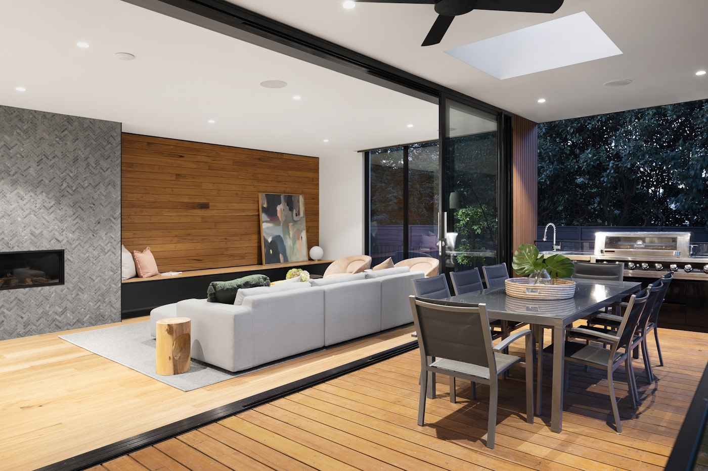
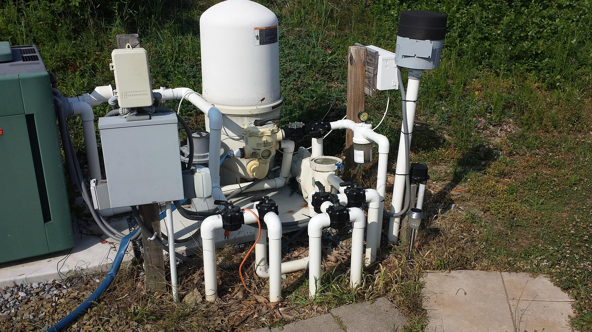

Weekly pool cleaning and maintenance
Routine water care, skimming, brushing, baskets, chemistry checks, and eyes on equipment performance.
Family-owned pool service in North Texas
Advanced Pool & Spa LLC keeps residential and commercial pools clean, safe, and working properly across McKinney, Prosper, Frisco, Allen, Plano, and nearby Crossroads communities.
Clear water. Dependable systems. Easier ownership.
From weekly cleaning to pumps, motors, heaters, plumbing, lights, filters, and automation systems, our team helps you stay ahead of water issues and equipment problems before they interrupt your pool season.
Services
Practical support for routine maintenance, problem pools, new ownership, and repair calls.
Routine water care, skimming, brushing, baskets, chemistry checks, and eyes on equipment performance.
Focused recovery plans for cloudy, green, or stubborn water so your pool gets back to clear.
Startup support for new pools, neglected pools, recently purchased homes, and seasonal restarts.
Diagnosis and repair support for filters, pumps, motors, heaters, plumbing, lights, and automation.
Help choosing and installing the right replacement parts when repair is not the smart long-term move.
Consistent pool care for homes, communities, commercial properties, and high-use environments.

Residential & commercial
Keep ownership simple with regular cleaning, balanced water, equipment checks, repair support, and no long-term contracts locking you into the wrong plan.
Maintain a cleaner, more reliable pool environment for guests, tenants, residents, or members with ongoing maintenance and responsive repair coordination.
Why choose Advanced Pool & Spa
Approachable service from a local team that treats pool care as ongoing trust, not a one-time transaction.
Flexible service designed around keeping your pool right, not trapping you in a plan.
Cleaning, chemistry, repairs, replacements, and automation support under one practical service partner.
Clear next steps when your pool needs attention, from algae recovery to equipment troubleshooting.
Equipment expertise
Pool performance depends on the system behind the water. Advanced Pool & Spa helps identify issues, repair failing components, and recommend upgrades that make sense for your pool and budget.

Service area
Looking for pool service in McKinney, pool cleaning in Prosper, pool repair in Frisco, pool maintenance in Allen, pool equipment repair in Plano, or commercial pool service in North Texas? We can help.
Reviews
Sample testimonial placeholders for replacement with verified customer reviews.
"The pool is consistently clear, the team communicates well, and service has been easy from the first visit."
"They diagnosed our heater issue quickly and explained the repair options without pressure."
"Dependable maintenance and practical repair support for a high-use commercial pool."
FAQ
Most residential pools benefit from weekly service. Commercial pools may need more frequent visits depending on usage, local requirements, and water conditions.
Yes. We can help with one-time cleanings, algae recovery, seasonal resets, and pools that need a restart after sitting too long.
We work with a wide range of pool equipment, including common systems from Hayward, Pentair, Jandy, Zodiac, and similar manufacturers.
Yes. Variable-speed pumps, LED lighting, timers, automation, and properly functioning equipment can reduce operating costs and improve reliability.
Yes. We support repairs, replacement recommendations, and automation improvements for easier scheduling, heating, lighting, and system control.
Yes. Service can be tailored around weekly, bi-weekly, monthly, one-time, residential, or commercial pool care needs.
Request a quote
Call now for direct help, or send a few details and Advanced Pool & Spa will follow up about service, cleaning, maintenance, repair, startup, restart, or equipment needs.